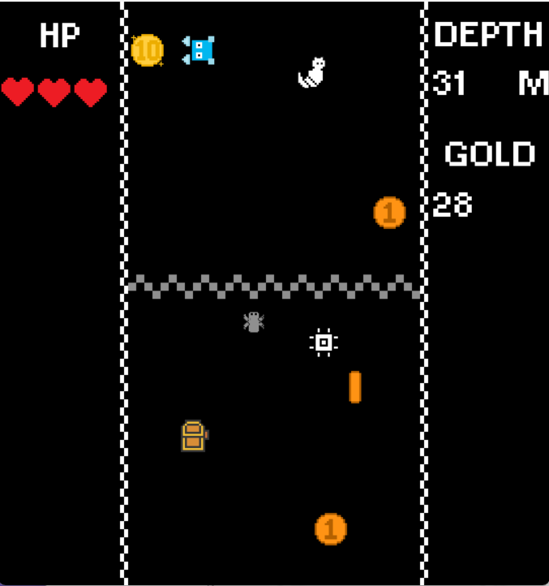
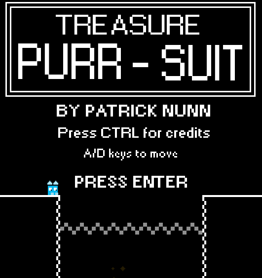
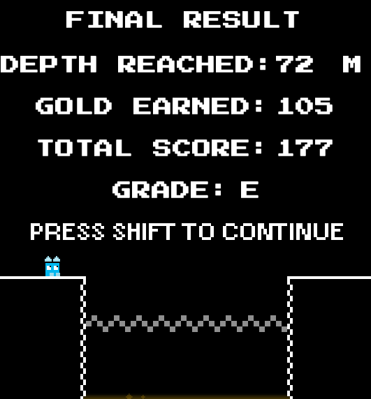

Screenshots


Project Overview
Treasure Purrsuit is a game where the player falls down a pit, dodging obstacles while collecting treasures.
There are various power ups that can be gained during gameplay in order to gain a higher score.
Depth travelled and the scores gained from collecting treasures are added up to grade the player score at the end.
Features and Tools used
Key Features
- Captivating gameplay with only left and right button used
- Increasing difficulty with playtime to allow players to ease in to the game
- Varied and unique power up system to help player avoid getting hit, or to get more points
- A grading system to simply display the user's performance at the end
Technologies Used
- Developed using Game Maker.
- Graphics created using Game Maker Sprite Tools
- Audio from other retro games
Development Process
This was developed as a game jam project for a Game Development Society event. The goal was to create a game based around the theme of 'Descent'. The idea of dodging obstacles while moving in one direction was inspired by the game Jetpack Joyride, from which the direction the player moves was changed from right side of the screen to the bottom of the screen to fit the theme. The scoreboard was added to incentivise replaying the game.
Reflections
This project showed that a game with simple controls can still have engaging gameplay through the evolution of the mechanics. In this game, there are a variety of enemies that appear the longer the game goes on, along with varied power ups to add further varience to the gameplay.